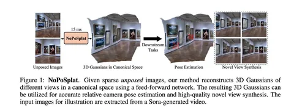
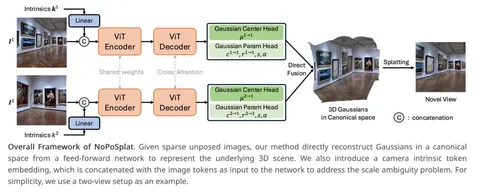

Сегодня коротко разбираем работу NoPoSplat, в которой предлагается метод 3D-реконструкции по RGB-изображениям без информации об их позах. Модель NoPoSplat выдаёт 3D Gaussian Splatting (3DGS) облако, которое можно рендерить (novel view synthesis, NVS) и использовать для оценки относительного положения камер (relative pose estimation).
Ключевое достижение статьи — демонстрация того, что простая архитектура, основанная на трансформерах (ViT, DPT), обученная исключительно с использованием фотометрических функций потерь, может решать задачи реконструкции за один прямой проход. Метод полагается на наличие внутренних параметров (intrinsics) камеры, однако обычно получить их легче, чем внешние (extrinsics).
Это интересно потому, что традиционные методы 3D-реконструкции и синтеза изображений часто требуют большого числа изображений, информации о параметрах камер и полагаются на многоэтапные structure from motion-пайплайны. Если количество входных изображений ограничено — так называемый sparse view — возникает проблема плохого перекрытия контента. Методы, которые полагаются на геометрические прайоры, например, cost volumes (например, MVSplat) или epipolar geometry (например, PixelSplat), перестают работать. Знание поз камер — существенное ограничение для in-the-wild приложений, например, обработки user generated content.
Архитектура модели «многобашенная» и состоит из трёх основных компонентов: ViT энкодера и декодера и DPT-голов, предсказывающих параметры 3DGS-облака, и повторяет широко известные DUSt3R и MASt3R. Веса энкодеров общие, а в декодерах применяется cross view attention.
У модели две головы. Первая предсказывает центроиды гауссиан, а вторая — оставшиеся параметры: поворот, масштаб, цвет. Чтобы лучше предсказывать цвет, в модели есть RGB shortcut — вместе с токенами из декодера в голову через свёртку пробрасывается патч из входного изображения. В качестве канонического пространства фиксируется система координат относительно первого входного изображения, и головы выдают параметры гауссиан в этой единой системе координат.
Для решения проблемы неоднозначности масштаба NoPoSplat делают camera intrinsic embedding. Интринсики преобразуются в токен и конкатенируются в энкодере с токенами картиночных патчей. В статье рассматривается ещё два способа добавления интринсиков в модель, но они оказались немного хуже.
Если описывать метод одним предложением, то можно сказать, что это MASt3R c примочками для предсказания 3DGS-облака.
Обучение модели проводится с использованием MSE- и LPIPS-лоссов, то есть для супервизии используют только RGB-изображения. Обучаемая модель предсказывает параметры 3DGS по входным изображениям. Затем 3DGS отрисовывается дифференцируемым рендером в нескольких новых известных позах из обучающего датасета и рендеры сравниваются с GT-изображениями. Groundtruth-позы используются только для рендеринга в процессе обучения. Обучают на датасетах RealEstate10k, ACID и DL3DV. Они включают RGB-изображения, а положения камер оценены с помощью COLMAP.
Модель может быть инициализирована случайно, но поскольку архитектура повторяет CroCoV2, DUSt3R и MASt3R, попробовали частично инициализировать веса из них и это дало лучшие результаты. Поскольку MASt3R был обучен на данных с GT-информацией о глубине, то нельзя сказать, что лучшая модель NoPoSplat обучена только на RGB-данных.
Для решения задачи оценки относительной позы между входными изображениями сначала находят приближение с использованием PnP + RANSAC, затем её уточняют, используя SSIM loss относительно предсказанного 3DGS-облака.
Качество NVS зависит от количества картинок на входе и степени их взаимного пересечения, PSNR варьируется от 22 до 27. С одной стороны, не так уж много, а с другой — удивительно хорошо при такой постановке задачи.
Разбор подготовил
CV Time
#YaICLR
